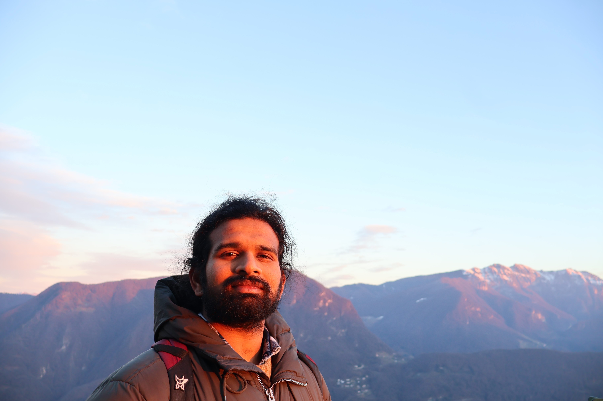

Aditya Varre
PhD Candidate, Theory of Machine Learning Lab
EPFL, Lausanne, Switzerland
News
- Jun 2026 I defended my PhD thesis, Training Dynamics of Gradient Methods on Simple Neural Architectures — defense slides.
About
I am a PhD candidate in the Theory of Machine Learning Lab at EPFL, advised by Nicolas Flammarion. My research lies at the intersection of optimization and the theory of deep learning.
I work on the training dynamics of simple neural networks, with a particular focus on the implicit regularization induced by stochastic noise and on how transformers learn in context.
Selected Publications
A selection of my work (* denotes equal contribution). See the full list of publications or my Google Scholar.
-
Gradient Flow Polarizes Softmax Outputs Towards Low-Entropy Solutions
arXiv preprint, 2026 [arXiv] [PDF] -
Learning In-Context n-grams with Transformers: Sub-n-grams Are Near-Stationary Points
International Conference on Machine Learning (ICML), 2025 [arXiv] [PDF] -
SGD vs GD: Rank Deficiency in Linear Networks
Advances in Neural Information Processing Systems (NeurIPS), 2024 [PDF] [OpenReview] -
SGD with Large Step Sizes Learns Sparse Features
International Conference on Machine Learning (ICML), 2023 [arXiv] [PDF] -
On the Spectral Bias of Two-Layer Linear Networks
Advances in Neural Information Processing Systems (NeurIPS), 2023 [PDF] -
Accelerated SGD for Non-Strongly-Convex Least Squares
Conference on Learning Theory (COLT), 2022 [arXiv] [PDF] -
Last Iterate Convergence of SGD for Least-Squares in the Interpolation Regime
Advances in Neural Information Processing Systems (NeurIPS), 2021 [arXiv] [PDF]